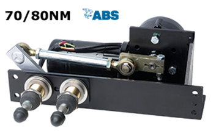

Wynn Marine & B. Hepworth Internal Pantograph/Pendulum Wiper Systems
The Type 1720 through 17100 range from medium to extra heavy duty window wiper output. Designed for the toughest marine conditions with proven reliability across commercial and military fleets.
Pantograph & Pendulum Model Range
1720: Ideal for low speed vessels with small windows.
1730: Ideal for average sized vessels with medium sized windows.
1750: Ideal for average to high speed vessels.
1770: AC voltage systems ideal for average to high speed vessels.
1771 / 1781: AC voltage inputs for high speed marine condition.
1780: Ideal for average to high speed vessels.
17100: Ideal for average to high speed vessels (extra heavy duty).

Typical pantograph/pendulum installation
Wynn Marine Type 1850 External Pantograph Wiper System
The Type 1850 external pantograph wiper is ideal for heavy duty usage in medium sized applications.
- Totally enclosed drive unit for safety, reliability and longevity
- Quick and easy installation - reducing costs
- 2 speed operation with self parking
- Intermittent wipe available dependant upon selected controller
- De-icing heaters in arms an option for cold weather operation
- Spray nozzles available in arms for efficient flow of fresh water
- Inward facing drive as standard; outward facing drive an option